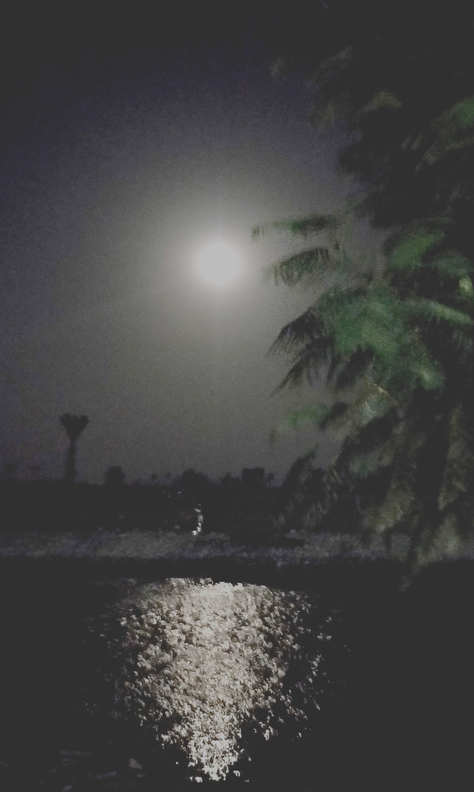

I am a PhD Student at the
Department of Mathematics and Statistics
Queen's University at Kingston
Working with Andrew Lewis
I am broadly interested in Differential Geometry and PDEs. Currently, I am working in the following areas:
